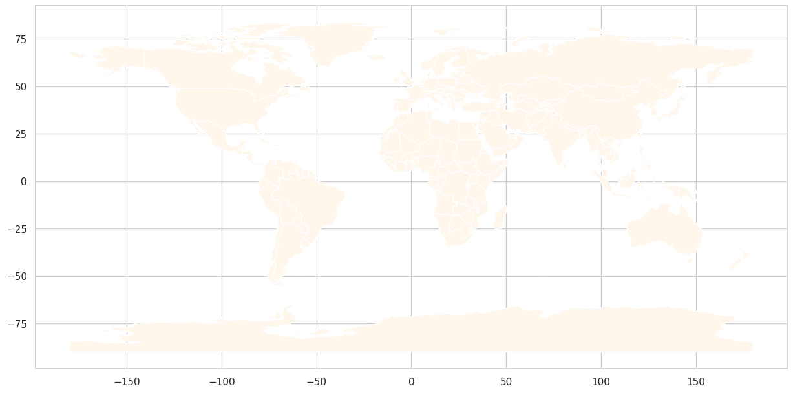

from google.colab import drive
drive.mount('/content/drive')Drive already mounted at /content/drive; to attempt to forcibly remount, call drive.mount("/content/drive", force_remount=True).Unicef Report Global Mortality Rates Ages 5-9 for 2022
from google.colab import drive
drive.mount('/content/drive')Drive already mounted at /content/drive; to attempt to forcibly remount, call drive.mount("/content/drive", force_remount=True).format: html: theme: flatly background color: white fontcolor: black highlight: tango mainfont: “Times New Roman” linkcolor: blue toc: true toc-location: left toc-depth: 2 toc-title: “Table of Contents” toc-numbering: true embed-resources: true code-fold: true execute: warning:false message: false
--2025-04-27 20:14:59-- https://naciscdn.org/naturalearth/110m/cultural/ne_110m_admin_0_countries.zip
Resolving naciscdn.org (naciscdn.org)... 52.85.61.28, 52.85.61.112, 52.85.61.108, ...
Connecting to naciscdn.org (naciscdn.org)|52.85.61.28|:443... connected.
HTTP request sent, awaiting response... 200 OK
Length: 214976 (210K) [application/zip]
Saving to: ‘ne_110m_admin_0_countries.zip.5’
ne_110m_a 0%[ ] 0 --.-KB/s ne_110m_admin_0_cou 100%[===================>] 209.94K --.-KB/s in 0.03s
2025-04-27 20:14:59 (6.71 MB/s) - ‘ne_110m_admin_0_countries.zip.5’ saved [214976/214976]
7-Zip [64] 16.02 : Copyright (c) 1999-2016 Igor Pavlov : 2016-05-21
p7zip Version 16.02 (locale=en_US.UTF-8,Utf16=on,HugeFiles=on,64 bits,2 CPUs Intel(R) Xeon(R) CPU @ 2.20GHz (406F0),ASM,AES-NI)
Scanning the drive for archives:
0M Scan 1 file, 214976 bytes (210 KiB)
Extracting archive: ne_110m_admin_0_countries.zip
--
Path = ne_110m_admin_0_countries.zip
Type = zip
Physical Size = 214976
0%
Would you like to replace the existing file:
Path: ./ne_110m_admin_0_countries.README.html
Size: 41905 bytes (41 KiB)
Modified: 2022-05-09 04:54:54
with the file from archive:
Path: ne_110m_admin_0_countries.README.html
Size: 41905 bytes (41 KiB)
Modified: 2022-05-09 04:54:54
? (Y)es / (N)o / (A)lways / (S)kip all / A(u)to rename all / (Q)uit? A
0% - ne_110m_admin_0_countries.README.html Everything is Ok
Files: 7
Size: 756312
Compressed: 214976File_1=pd.read_csv('drive/MyDrive/unicef_indicator_1.csv')
File_1.head()
chosen_value='obs_value'
obs_value=chosen_value
data=pd.DataFrame(File_1)
chosen_year = 2022
time_period=chosen_year
year_2022 = data[data['time_period'] == 2022]obs_value="Mortality Rate"data=pd.DataFrame(File_1)
year_2022 = data[data['time_period'] == 2022]print("Data for the year 2022:\n", year_2022)Data for the year 2022:
country alpha_2_code alpha_3_code numeric_code \
32 Afghanistan AF AFG 4
65 Afghanistan AF AFG 4
98 Afghanistan AF AFG 4
131 Albania AL ALB 8
164 Albania AL ALB 8
... ... ... ... ...
19568 Zambia ZM ZMB 894
19601 Zambia ZM ZMB 894
19634 Zimbabwe ZW ZWE 716
19667 Zimbabwe ZW ZWE 716
19700 Zimbabwe ZW ZWE 716
indicator time_period obs_value sex \
32 Mortality rate age 5-9 2022 5.215871 Female
65 Mortality rate age 5-9 2022 5.303403 Male
98 Mortality rate age 5-9 2022 5.260654 Total
131 Mortality rate age 5-9 2022 0.762573 Female
164 Mortality rate age 5-9 2022 0.842514 Male
... ... ... ... ...
19568 Mortality rate age 5-9 2022 6.625503 Male
19601 Mortality rate age 5-9 2022 6.075005 Total
19634 Mortality rate age 5-9 2022 3.762859 Female
19667 Mortality rate age 5-9 2022 4.633727 Male
19700 Mortality rate age 5-9 2022 4.198438 Total
unit_multiplier unit_of_measure observation_status \
32 NaN Deaths per 1,000 children aged 5 Normal value
65 NaN Deaths per 1,000 children aged 5 Normal value
98 NaN Deaths per 1,000 children aged 5 Normal value
131 NaN Deaths per 1,000 children aged 5 Normal value
164 NaN Deaths per 1,000 children aged 5 Normal value
... ... ... ...
19568 NaN Deaths per 1,000 children aged 5 Normal value
19601 NaN Deaths per 1,000 children aged 5 Normal value
19634 NaN Deaths per 1,000 children aged 5 Normal value
19667 NaN Deaths per 1,000 children aged 5 Normal value
19700 NaN Deaths per 1,000 children aged 5 Normal value
observation_confidentaility \
32 NaN
65 NaN
98 NaN
131 NaN
164 NaN
... ...
19568 NaN
19601 NaN
19634 NaN
19667 NaN
19700 NaN
time_period_activity_related_to_when_the_data_are_collected current_age
32 NaN Total
65 NaN Total
98 NaN Total
131 NaN Total
164 NaN Total
... ... ...
19568 NaN Total
19601 NaN Total
19634 NaN Total
19667 NaN Total
19700 NaN Total
[597 rows x 14 columns]File_2=pd.read_csv('drive/MyDrive/unicef_indicator_2.csv')
File_2.head()| country | alpha_2_code | alpha_3_code | numeric_code | indicator | time_period | obs_value | sex | unit_multiplier | unit_of_measure | observation_status | observation_confidentaility | time_period_activity_related_to_when_the_data_are_collected | current_age | |
|---|---|---|---|---|---|---|---|---|---|---|---|---|---|---|
| 0 | Afghanistan | AF | AFG | 4 | Proportion of population using surface water | 2000 | 25.402164 | Total | NaN | % | NaN | NaN | NaN | Total |
| 1 | Afghanistan | AF | AFG | 4 | Proportion of population using surface water | 2001 | 25.383093 | Total | NaN | % | NaN | NaN | NaN | Total |
| 2 | Afghanistan | AF | AFG | 4 | Proportion of population using surface water | 2002 | 24.457567 | Total | NaN | % | NaN | NaN | NaN | Total |
| 3 | Afghanistan | AF | AFG | 4 | Proportion of population using surface water | 2003 | 23.533057 | Total | NaN | % | NaN | NaN | NaN | Total |
| 4 | Afghanistan | AF | AFG | 4 | Proportion of population using surface water | 2004 | 22.598950 | Total | NaN | % | NaN | NaN | NaN | Total |
#Introduction
This report provides a comprehensive analysis of insights from the UNICEF report on global mortality rates for children ages 5-9 in 2022. The following analysis includes a detailed explanation of the data, a summary of the findings, and visualizations to support the insights derived from the data. The analysis focuses on the mortality rates of young children, specifically ages 5-9, across various countries and regions. Furthermore, the data is sourced from UNICEF, which is a reputable globally known organization that focuses on children’s rights and well-being. The report aimes to highlight the disaparities in mortality rates across the different regions and countries, and to provide insights into the factors that contribute to these disaparities. This report is intended for anyone interested in understanding more about the global mortality rates of children ages 5-9. This report is aimed to highlight the importatnce of adressing the global issues of young child mortality. Furthermore, this report used the plotnine package to create four visualizations to support the insights derived from the provided data set. The four visualizations are: 1. World Map Chart 2. Bar Chart 3. Scatterplot With a Linear Regression Line 4. Time Series Line Chart.
#Data Set Descriptions
The data sets that were used for this report were originally sourced from UNICEF’s reports on global mortality rates for children ages 5-9 in 2022. The first dataset, Indicator 1, contains information on various countries, their regions, and the corresponding mortality rates for children aged 5-9. The data is stuctured in a tabular format, with each row representing a country and its correspondind data. The columns in the dataset include the following: The second data set
##1. World Map Chart
World Map: Global and Regional Comparison of Averages of Child Mortality Rates
import geopandas as gpd
gdf = gpd.read_file("ne_110m_admin_0_countries.shp")
import matplotlib.pyplot as plt!wget https://naciscdn.org/naturalearth/110m/cultural/ne_110m_admin_0_countries.zip--2025-04-27 16:42:22-- https://naciscdn.org/naturalearth/110m/cultural/ne_110m_admin_0_countries.zip
Resolving naciscdn.org (naciscdn.org)... 18.160.46.110, 18.160.46.106, 18.160.46.70, ...
Connecting to naciscdn.org (naciscdn.org)|18.160.46.110|:443... connected.
HTTP request sent, awaiting response... 200 OK
Length: 214976 (210K) [application/zip]
Saving to: ‘ne_110m_admin_0_countries.zip.3’
ne_110m_a 0%[ ] 0 --.-KB/s ne_110m_admin_0_cou 100%[===================>] 209.94K --.-KB/s in 0.01s
2025-04-27 16:42:22 (18.8 MB/s) - ‘ne_110m_admin_0_countries.zip.3’ saved [214976/214976]
!7z x ne_110m_admin_0_countries.zip
7-Zip [64] 16.02 : Copyright (c) 1999-2016 Igor Pavlov : 2016-05-21
p7zip Version 16.02 (locale=en_US.UTF-8,Utf16=on,HugeFiles=on,64 bits,2 CPUs Intel(R) Xeon(R) CPU @ 2.20GHz (406F0),ASM,AES-NI)
Scanning the drive for archives:
0M Scan 1 file, 214976 bytes (210 KiB)
Extracting archive: ne_110m_admin_0_countries.zip
--
Path = ne_110m_admin_0_countries.zip
Type = zip
Physical Size = 214976
0%
Would you like to replace the existing file:
Path: ./ne_110m_admin_0_countries.README.html
Size: 41905 bytes (41 KiB)
Modified: 2022-05-09 04:54:54
with the file from archive:
Path: ne_110m_admin_0_countries.README.html
Size: 41905 bytes (41 KiB)
Modified: 2022-05-09 04:54:54
? (Y)es / (N)o / (A)lways / (S)kip all / A(u)to rename all / (Q)uit? 7z x ne_110m_admin_0_countries.zip -aoa
(Y)es / (N)o / (A)lways / (S)kip all / A(u)to rename all / (Q)uit? 7z x ne_110m_admin_0_countries.zip -aoa
(Y)es / (N)o / (A)lways / (S)kip all / A(u)to rename all / (Q)uit? A
0% - ne_110m_admin_0_countries.README.html Everything is Ok
Files: 7
Size: 756312
Compressed: 214976gdf = gpd.read_file("ne_110m_admin_0_countries.shp")print(gdf.head()) featurecla scalerank LABELRANK SOVEREIGNT SOV_A3 \
0 Admin-0 country 1 6 Fiji FJI
1 Admin-0 country 1 3 United Republic of Tanzania TZA
2 Admin-0 country 1 7 Western Sahara SAH
3 Admin-0 country 1 2 Canada CAN
4 Admin-0 country 1 2 United States of America US1
ADM0_DIF LEVEL TYPE TLC ADMIN ... \
0 0 2 Sovereign country 1 Fiji ...
1 0 2 Sovereign country 1 United Republic of Tanzania ...
2 0 2 Indeterminate 1 Western Sahara ...
3 0 2 Sovereign country 1 Canada ...
4 1 2 Country 1 United States of America ...
FCLASS_TR FCLASS_ID FCLASS_PL FCLASS_GR FCLASS_IT \
0 None None None None None
1 None None None None None
2 Unrecognized Unrecognized Unrecognized None None
3 None None None None None
4 None None None None None
FCLASS_NL FCLASS_SE FCLASS_BD FCLASS_UA \
0 None None None None
1 None None None None
2 Unrecognized None None None
3 None None None None
4 None None None None
geometry
0 MULTIPOLYGON (((180 -16.06713, 180 -16.55522, ...
1 POLYGON ((33.90371 -0.95, 34.07262 -1.05982, 3...
2 POLYGON ((-8.66559 27.65643, -8.66512 27.58948...
3 MULTIPOLYGON (((-122.84 49, -122.97421 49.0025...
4 MULTIPOLYGON (((-122.84 49, -120 49, -117.0312...
[5 rows x 169 columns]print(gdf.columns.tolist())['featurecla', 'scalerank', 'LABELRANK', 'SOVEREIGNT', 'SOV_A3', 'ADM0_DIF', 'LEVEL', 'TYPE', 'TLC', 'ADMIN', 'ADM0_A3', 'GEOU_DIF', 'GEOUNIT', 'GU_A3', 'SU_DIF', 'SUBUNIT', 'SU_A3', 'BRK_DIFF', 'NAME', 'NAME_LONG', 'BRK_A3', 'BRK_NAME', 'BRK_GROUP', 'ABBREV', 'POSTAL', 'FORMAL_EN', 'FORMAL_FR', 'NAME_CIAWF', 'NOTE_ADM0', 'NOTE_BRK', 'NAME_SORT', 'NAME_ALT', 'MAPCOLOR7', 'MAPCOLOR8', 'MAPCOLOR9', 'MAPCOLOR13', 'POP_EST', 'POP_RANK', 'POP_YEAR', 'GDP_MD', 'GDP_YEAR', 'ECONOMY', 'INCOME_GRP', 'FIPS_10', 'ISO_A2', 'ISO_A2_EH', 'ISO_A3', 'ISO_A3_EH', 'ISO_N3', 'ISO_N3_EH', 'UN_A3', 'WB_A2', 'WB_A3', 'WOE_ID', 'WOE_ID_EH', 'WOE_NOTE', 'ADM0_ISO', 'ADM0_DIFF', 'ADM0_TLC', 'ADM0_A3_US', 'ADM0_A3_FR', 'ADM0_A3_RU', 'ADM0_A3_ES', 'ADM0_A3_CN', 'ADM0_A3_TW', 'ADM0_A3_IN', 'ADM0_A3_NP', 'ADM0_A3_PK', 'ADM0_A3_DE', 'ADM0_A3_GB', 'ADM0_A3_BR', 'ADM0_A3_IL', 'ADM0_A3_PS', 'ADM0_A3_SA', 'ADM0_A3_EG', 'ADM0_A3_MA', 'ADM0_A3_PT', 'ADM0_A3_AR', 'ADM0_A3_JP', 'ADM0_A3_KO', 'ADM0_A3_VN', 'ADM0_A3_TR', 'ADM0_A3_ID', 'ADM0_A3_PL', 'ADM0_A3_GR', 'ADM0_A3_IT', 'ADM0_A3_NL', 'ADM0_A3_SE', 'ADM0_A3_BD', 'ADM0_A3_UA', 'ADM0_A3_UN', 'ADM0_A3_WB', 'CONTINENT', 'REGION_UN', 'SUBREGION', 'REGION_WB', 'NAME_LEN', 'LONG_LEN', 'ABBREV_LEN', 'TINY', 'HOMEPART', 'MIN_ZOOM', 'MIN_LABEL', 'MAX_LABEL', 'LABEL_X', 'LABEL_Y', 'NE_ID', 'WIKIDATAID', 'NAME_AR', 'NAME_BN', 'NAME_DE', 'NAME_EN', 'NAME_ES', 'NAME_FA', 'NAME_FR', 'NAME_EL', 'NAME_HE', 'NAME_HI', 'NAME_HU', 'NAME_ID', 'NAME_IT', 'NAME_JA', 'NAME_KO', 'NAME_NL', 'NAME_PL', 'NAME_PT', 'NAME_RU', 'NAME_SV', 'NAME_TR', 'NAME_UK', 'NAME_UR', 'NAME_VI', 'NAME_ZH', 'NAME_ZHT', 'FCLASS_ISO', 'TLC_DIFF', 'FCLASS_TLC', 'FCLASS_US', 'FCLASS_FR', 'FCLASS_RU', 'FCLASS_ES', 'FCLASS_CN', 'FCLASS_TW', 'FCLASS_IN', 'FCLASS_NP', 'FCLASS_PK', 'FCLASS_DE', 'FCLASS_GB', 'FCLASS_BR', 'FCLASS_IL', 'FCLASS_PS', 'FCLASS_SA', 'FCLASS_EG', 'FCLASS_MA', 'FCLASS_PT', 'FCLASS_AR', 'FCLASS_JP', 'FCLASS_KO', 'FCLASS_VN', 'FCLASS_TR', 'FCLASS_ID', 'FCLASS_PL', 'FCLASS_GR', 'FCLASS_IT', 'FCLASS_NL', 'FCLASS_SE', 'FCLASS_BD', 'FCLASS_UA', 'geometry']print(gdf.crs)EPSG:4326print(world.columns.tolist())['featurecla', 'scalerank', 'LABELRANK', 'SOVEREIGNT', 'SOV_A3', 'ADM0_DIF', 'LEVEL', 'TYPE', 'TLC', 'ADMIN', 'ADM0_A3', 'GEOU_DIF', 'GEOUNIT', 'GU_A3', 'SU_DIF', 'SUBUNIT', 'SU_A3', 'BRK_DIFF', 'NAME', 'NAME_LONG', 'BRK_A3', 'BRK_NAME', 'BRK_GROUP', 'ABBREV', 'POSTAL', 'FORMAL_EN', 'FORMAL_FR', 'NAME_CIAWF', 'NOTE_ADM0', 'NOTE_BRK', 'NAME_SORT', 'NAME_ALT', 'MAPCOLOR7', 'MAPCOLOR8', 'MAPCOLOR9', 'MAPCOLOR13', 'POP_EST', 'POP_RANK', 'POP_YEAR', 'GDP_MD', 'GDP_YEAR', 'ECONOMY', 'INCOME_GRP', 'FIPS_10', 'ISO_A2', 'ISO_A2_EH', 'ISO_A3', 'ISO_A3_EH', 'ISO_N3', 'ISO_N3_EH', 'UN_A3', 'WB_A2', 'WB_A3', 'WOE_ID', 'WOE_ID_EH', 'WOE_NOTE', 'ADM0_ISO', 'ADM0_DIFF', 'ADM0_TLC', 'ADM0_A3_US', 'ADM0_A3_FR', 'ADM0_A3_RU', 'ADM0_A3_ES', 'ADM0_A3_CN', 'ADM0_A3_TW', 'ADM0_A3_IN', 'ADM0_A3_NP', 'ADM0_A3_PK', 'ADM0_A3_DE', 'ADM0_A3_GB', 'ADM0_A3_BR', 'ADM0_A3_IL', 'ADM0_A3_PS', 'ADM0_A3_SA', 'ADM0_A3_EG', 'ADM0_A3_MA', 'ADM0_A3_PT', 'ADM0_A3_AR', 'ADM0_A3_JP', 'ADM0_A3_KO', 'ADM0_A3_VN', 'ADM0_A3_TR', 'ADM0_A3_ID', 'ADM0_A3_PL', 'ADM0_A3_GR', 'ADM0_A3_IT', 'ADM0_A3_NL', 'ADM0_A3_SE', 'ADM0_A3_BD', 'ADM0_A3_UA', 'ADM0_A3_UN', 'ADM0_A3_WB', 'CONTINENT', 'REGION_UN', 'SUBREGION', 'REGION_WB', 'NAME_LEN', 'LONG_LEN', 'ABBREV_LEN', 'TINY', 'HOMEPART', 'MIN_ZOOM', 'MIN_LABEL', 'MAX_LABEL', 'LABEL_X', 'LABEL_Y', 'NE_ID', 'WIKIDATAID', 'NAME_AR', 'NAME_BN', 'NAME_DE', 'NAME_EN', 'NAME_ES', 'NAME_FA', 'NAME_FR', 'NAME_EL', 'NAME_HE', 'NAME_HI', 'NAME_HU', 'NAME_ID', 'NAME_IT', 'NAME_JA', 'NAME_KO', 'NAME_NL', 'NAME_PL', 'NAME_PT', 'NAME_RU', 'NAME_SV', 'NAME_TR', 'NAME_UK', 'NAME_UR', 'NAME_VI', 'NAME_ZH', 'NAME_ZHT', 'FCLASS_ISO', 'TLC_DIFF', 'FCLASS_TLC', 'FCLASS_US', 'FCLASS_FR', 'FCLASS_RU', 'FCLASS_ES', 'FCLASS_CN', 'FCLASS_TW', 'FCLASS_IN', 'FCLASS_NP', 'FCLASS_PK', 'FCLASS_DE', 'FCLASS_GB', 'FCLASS_BR', 'FCLASS_IL', 'FCLASS_PS', 'FCLASS_SA', 'FCLASS_EG', 'FCLASS_MA', 'FCLASS_PT', 'FCLASS_AR', 'FCLASS_JP', 'FCLASS_KO', 'FCLASS_VN', 'FCLASS_TR', 'FCLASS_ID', 'FCLASS_PL', 'FCLASS_GR', 'FCLASS_IT', 'FCLASS_NL', 'FCLASS_SE', 'FCLASS_BD', 'FCLASS_UA', 'geometry', 'country', 'obs_value']print(data.columns.tolist())['country', 'obs_value']print(data.index.names)[None]world=gdf
indicators1 = pd.DataFrame(File_1)
world.columns = world.columns.str.strip()
world = world.merge(indicators1, how="left", left_on="featurecla", right_on="country")
!pip install geopandas
!pip install plotnine
import pandas as pd
import geopandas as gpd
from plotnine import ggplot, aes, geom_line
data=pd.DataFrame(File_1)
chosen_year = 2022
time_period=chosen_year
year_2022 = data[data['time_period'] == 2022]
chosen_value='obs_value'
obs_value=chosen_value
from plotnine import ggplot, aes, geom_map, expand_limits
import matplotlib.pyplot as plt
(
ggplot(world, aes(fill='obs_value'))
+ geom_map(data=world)
+ expand_limits(
x=world.total_bounds[0],
y=world.total_bounds[1],
x_max=world.total_bounds[2],
y_max=world.total_bounds[3])
)
fig, ax = plt.subplots(1, 1, figsize=(15, 10))
world.plot(ax=ax, color='grey')
gdf.plot(column='featurecla',ax=ax,legend=True,
legend_kwds={'label': "Mortality Rate (per 1000)"},
cmap='OrRd', missing_kwds={"color": "lightgrey", "label": "No data"})
ax.set_title("Global Mortality Rates Ages 5-9 for 2022")
ax.axis('off')
plt.show()
chosen_year = 2022
year_data = data[data['obs_value'] == 2022]
columns_to_remove = ['alpha_2_code', 'alpha_3_code','numeric_code','unit_multiplier','observation_status']
from plotnine import ggplot, aes, geom_map, expand_limits
(
ggplot(world, aes(fill='Mortality Rate'))
+ geom_map(data=world)
+ expand_limits(
x=world.total_bounds[0],
y=world.total_bounds[1],
x_max=world.total_bounds[2],
y_max=world.total_bounds[3])
)
fig, ax = plt.subplots(1, 1, figsize=(15, 10))
world.plot(ax=ax, color='grey')
gdf.plot(column=chosen_value, ax=ax, legend=True,
legend_kwds={'label': "Mortality Rate (per 1000)"},
cmap='OrRd', missing_kwds={"color": "lightgrey", "label": "No data"})
ax.set_title("Global Mortality Rates Ages 5-9 for 2022")
ax.axis('off')
plt.show()Requirement already satisfied: geopandas in /usr/local/lib/python3.11/dist-packages (1.0.1)
Requirement already satisfied: numpy>=1.22 in /usr/local/lib/python3.11/dist-packages (from geopandas) (2.0.2)
Requirement already satisfied: pyogrio>=0.7.2 in /usr/local/lib/python3.11/dist-packages (from geopandas) (0.10.0)
Requirement already satisfied: packaging in /usr/local/lib/python3.11/dist-packages (from geopandas) (24.2)
Requirement already satisfied: pandas>=1.4.0 in /usr/local/lib/python3.11/dist-packages (from geopandas) (2.2.2)
Requirement already satisfied: pyproj>=3.3.0 in /usr/local/lib/python3.11/dist-packages (from geopandas) (3.7.1)
Requirement already satisfied: shapely>=2.0.0 in /usr/local/lib/python3.11/dist-packages (from geopandas) (2.1.0)
Requirement already satisfied: python-dateutil>=2.8.2 in /usr/local/lib/python3.11/dist-packages (from pandas>=1.4.0->geopandas) (2.8.2)
Requirement already satisfied: pytz>=2020.1 in /usr/local/lib/python3.11/dist-packages (from pandas>=1.4.0->geopandas) (2025.2)
Requirement already satisfied: tzdata>=2022.7 in /usr/local/lib/python3.11/dist-packages (from pandas>=1.4.0->geopandas) (2025.2)
Requirement already satisfied: certifi in /usr/local/lib/python3.11/dist-packages (from pyogrio>=0.7.2->geopandas) (2025.1.31)
Requirement already satisfied: six>=1.5 in /usr/local/lib/python3.11/dist-packages (from python-dateutil>=2.8.2->pandas>=1.4.0->geopandas) (1.17.0)
Requirement already satisfied: plotnine in /usr/local/lib/python3.11/dist-packages (0.14.5)
Requirement already satisfied: matplotlib>=3.8.0 in /usr/local/lib/python3.11/dist-packages (from plotnine) (3.10.0)
Requirement already satisfied: pandas>=2.2.0 in /usr/local/lib/python3.11/dist-packages (from plotnine) (2.2.2)
Requirement already satisfied: mizani~=0.13.0 in /usr/local/lib/python3.11/dist-packages (from plotnine) (0.13.3)
Requirement already satisfied: numpy>=1.23.5 in /usr/local/lib/python3.11/dist-packages (from plotnine) (2.0.2)
Requirement already satisfied: scipy>=1.8.0 in /usr/local/lib/python3.11/dist-packages (from plotnine) (1.14.1)
Requirement already satisfied: statsmodels>=0.14.0 in /usr/local/lib/python3.11/dist-packages (from plotnine) (0.14.4)
Requirement already satisfied: contourpy>=1.0.1 in /usr/local/lib/python3.11/dist-packages (from matplotlib>=3.8.0->plotnine) (1.3.2)
Requirement already satisfied: cycler>=0.10 in /usr/local/lib/python3.11/dist-packages (from matplotlib>=3.8.0->plotnine) (0.12.1)
Requirement already satisfied: fonttools>=4.22.0 in /usr/local/lib/python3.11/dist-packages (from matplotlib>=3.8.0->plotnine) (4.57.0)
Requirement already satisfied: kiwisolver>=1.3.1 in /usr/local/lib/python3.11/dist-packages (from matplotlib>=3.8.0->plotnine) (1.4.8)
Requirement already satisfied: packaging>=20.0 in /usr/local/lib/python3.11/dist-packages (from matplotlib>=3.8.0->plotnine) (24.2)
Requirement already satisfied: pillow>=8 in /usr/local/lib/python3.11/dist-packages (from matplotlib>=3.8.0->plotnine) (11.1.0)
Requirement already satisfied: pyparsing>=2.3.1 in /usr/local/lib/python3.11/dist-packages (from matplotlib>=3.8.0->plotnine) (3.2.3)
Requirement already satisfied: python-dateutil>=2.7 in /usr/local/lib/python3.11/dist-packages (from matplotlib>=3.8.0->plotnine) (2.8.2)
Requirement already satisfied: pytz>=2020.1 in /usr/local/lib/python3.11/dist-packages (from pandas>=2.2.0->plotnine) (2025.2)
Requirement already satisfied: tzdata>=2022.7 in /usr/local/lib/python3.11/dist-packages (from pandas>=2.2.0->plotnine) (2025.2)
Requirement already satisfied: patsy>=0.5.6 in /usr/local/lib/python3.11/dist-packages (from statsmodels>=0.14.0->plotnine) (1.0.1)
Requirement already satisfied: six>=1.5 in /usr/local/lib/python3.11/dist-packages (from python-dateutil>=2.7->matplotlib>=3.8.0->plotnine) (1.17.0)--------------------------------------------------------------------------- TypeError Traceback (most recent call last) <ipython-input-153-e7cdf6d68efa> in <cell line: 0>() 29 fig, ax = plt.subplots(1, 1, figsize=(15, 10)) 30 world.plot(ax=ax, color='grey') ---> 31 gdf.plot(column='featurecla',ax=ax,legend=True, 32 legend_kwds={'label': "Mortality Rate (per 1000)"}, 33 cmap='OrRd', missing_kwds={"color": "lightgrey", "label": "No data"}) /usr/local/lib/python3.11/dist-packages/geopandas/plotting.py in __call__(self, *args, **kwargs) 966 kind = kwargs.pop("kind", "geo") 967 if kind == "geo": --> 968 return plot_dataframe(data, *args, **kwargs) 969 if kind in self._pandas_kinds: 970 # Access pandas plots /usr/local/lib/python3.11/dist-packages/geopandas/plotting.py in plot_dataframe(df, column, cmap, color, ax, cax, categorical, legend, scheme, k, vmin, vmax, markersize, figsize, legend_kwds, categories, classification_kwds, missing_kwds, aspect, autolim, **style_kwds) 944 legend_kwds.setdefault("handles", patches) 945 legend_kwds.setdefault("labels", categories) --> 946 ax.legend(**legend_kwds) 947 else: 948 if cax is not None: /usr/local/lib/python3.11/dist-packages/matplotlib/axes/_axes.py in legend(self, *args, **kwargs) 335 """ 336 handles, labels, kwargs = mlegend._parse_legend_args([self], *args, **kwargs) --> 337 self.legend_ = mlegend.Legend(self, handles, labels, **kwargs) 338 self.legend_._remove_method = self._remove_legend 339 return self.legend_ TypeError: Legend.__init__() got an unexpected keyword argument 'label'

File_1= data.groupby('country')['obs_value'].mean().reset_index()
File_1.columns = ['country', 'obs_value']
chosen_year = 2022
year_data = data[data['time_period'] == 2022]
columns_to_remove = ['alpha_2_code', 'alpha_3_code','numeric_code','unit_multiplier','observation_status']
print (File_1) country obs_value
0 Afghanistan 5.786143
1 Albania 1.867851
2 Algeria 3.008856
3 Andorra 0.701770
4 Angola 22.036255
.. ... ...
194 Vietnam 3.113645
195 Virgin Islands, British 1.394378
196 Yemen 6.814647
197 Zambia 12.152046
198 Zimbabwe 7.405719
[199 rows x 2 columns]###Child Mortality Rates by Country (World Map)
The world map above, used as a visual representation, shows the global mortality rates for children ages 5-9 in 2022. The map is color-coded to represent the mortality rates, with the darker shades indicating higher mortality rates. The map also highlights the regions with no data available. The map demonstrates that it is evident that countries in Sub-Saharan Africa, such as Niger and Somalia, have the highest levels of child mortality rates, while countries in Europe and North America, such as Japan and Iceland, have some of the lowest levels of CMR. Also, the map shows that there are signficant disparities in child mortality rates across different regions of the world. In terms of the map showing data that is unavailable, it is important to note that those countries are not included in the analysis.
The map shows a clear geographical pattern in child mortality rates, with higher rates concentrating in Sub-Saharan Africa and lower rates in Europe and the North American Continent. This pattern highlights the disparities in child health outcomes across different regions of the world.
Key Factors That Contribute to the Disparities in Child Morality Rates: - Socioeconomic: Countries with lower income levels often tend to have higher child mortality rates. This is due to various factors, such as limited acsess to healtcare, poor and unbalanced nutrition, and or lack of education. - Healthcare Access: Countries that have limited access to healthcare services often experience higher child mortality rates. This includes inadequate medical facilities, shortage of healthcare professionals, and lack of essential medicines and vaccines. - Nutrition: Malnutrition is a significant factor contributing to child mortality. Children who do not receive adequate nutrition are more susceptible to diseases and have weaker immune systems. - Education: Lack of accsess to education, particularly among females, is linked to higher child mortality rates. It is assumed that mothers, who have had accsess to some level or form of education, are more likely to seek healthcare services and adopt better childcare practices. - Sanitation and Clean Water: Poor sanitation and lack of access to clean drinking water further increases the risk of diseases such as diarrhea, which is a leading cause of child mortality in many developing countries. - Conflict and Political Instabilities: Countries experiencing conflict or political instability often face disruptions in healthcare services, education, and other public services leading to higher child mortality rates.
##2. Bar Chart
Bar Chart, Gender Disparities in Averages of Global Child Mortality Rate
import matplotlib.pyplot as plt
import seaborn as sns
import pandas as pd
data=pd.DataFrame(File_1)
DataFrame=pd.DataFrame(File_1)
chosen_year = 2022
time_period=chosen_year
year_2022 = data[DataFrame:data['time_period'] == 2022]
columns_to_remove = ['alpha_2_code', 'alpha_3_code','numeric_code','unit_multiplier','observation_status']
# Set seaborn style
sns.set(style="whitegrid")
plt.figure(figsize=(12, 7))
plt.figure(figsize=(12, 7))
# Plot male mortality rates
sns.barplot(x='Country', y='Avg Mortality Rate', data=data[data['sex'] == 'male'], color='blue', label='Male')
# Plot female mortality rates on top
sns.barplot(x='Country', y='Avg Mortality Rate', data=data[data['sex'] == 'female'], color='pink', label='Female')
plt.title("Global Mortality Rates Ages 5-9 for 2022 by Sex")
plt.xlabel("Country")
plt.ylabel("Global Avg. Mortality Rates (per 1000)")
plt.xticks(rotation=90)
plt.legend()
plt.tight_layout()
plt.show()
plt.title("Global Mortality Rates Ages 5-9 for 2022 by Gender")
plt.xlabel("Country")
plt.ylabel("Global Avg. Mortality Rates (per 1000)")
plt.xticks(rotation=90)
plt.tight_layout()
plt.legend(title='Sex')
plt.show()--------------------------------------------------------------------------- TypeError Traceback (most recent call last) <ipython-input-154-035e9ff2ac45> in <cell line: 0>() 6 chosen_year = 2022 7 time_period=chosen_year ----> 8 year_2022 = data[DataFrame:data['time_period'] == 2022] 9 columns_to_remove = ['alpha_2_code', 'alpha_3_code','numeric_code','unit_multiplier','observation_status'] 10 /usr/local/lib/python3.11/dist-packages/pandas/core/frame.py in __getitem__(self, key) 4083 # Do we have a slicer (on rows)? 4084 if isinstance(key, slice): -> 4085 return self._getitem_slice(key) 4086 4087 # Do we have a (boolean) DataFrame? /usr/local/lib/python3.11/dist-packages/pandas/core/generic.py in _getitem_slice(self, key) 4347 # _convert_slice_indexer to determine if this slice is positional 4348 # or label based, and if the latter, convert to positional -> 4349 slobj = self.index._convert_slice_indexer(key, kind="getitem") 4350 if isinstance(slobj, np.ndarray): 4351 # reachable with DatetimeIndex /usr/local/lib/python3.11/dist-packages/pandas/core/indexes/base.py in _convert_slice_indexer(self, key, kind) 4246 elif self.dtype.kind in "iu": 4247 # Note: these checks are redundant if we know is_index_slice -> 4248 self._validate_indexer("slice", key.start, "getitem") 4249 self._validate_indexer("slice", key.stop, "getitem") 4250 self._validate_indexer("slice", key.step, "getitem") /usr/local/lib/python3.11/dist-packages/pandas/core/indexes/base.py in _validate_indexer(self, form, key, kind) 6695 """ 6696 if not lib.is_int_or_none(key): -> 6697 self._raise_invalid_indexer(form, key) 6698 6699 def _maybe_cast_slice_bound(self, label, side: str_t): /usr/local/lib/python3.11/dist-packages/pandas/core/indexes/base.py in _raise_invalid_indexer(self, form, key, reraise) 4299 if reraise is not lib.no_default: 4300 raise TypeError(msg) from reraise -> 4301 raise TypeError(msg) 4302 4303 # -------------------------------------------------------------------- TypeError: cannot do slice indexing on RangeIndex with these indexers [ country alpha_2_code alpha_3_code numeric_code \ 0 Afghanistan AF AFG 4 1 Afghanistan AF AFG 4 2 Afghanistan AF AFG 4 3 Afghanistan AF AFG 4 4 Afghanistan AF AFG 4 ... ... ... ... ... 19696 Zimbabwe ZW ZWE 716 19697 Zimbabwe ZW ZWE 716 19698 Zimbabwe ZW ZWE 716 19699 Zimbabwe ZW ZWE 716 19700 Zimbabwe ZW ZWE 716 indicator time_period obs_value sex \ 0 Mortality rate age 5-9 1990 10.301460 Female 1 Mortality rate age 5-9 1991 9.368171 Female 2 Mortality rate age 5-9 1992 8.499896 Female 3 Mortality rate age 5-9 1993 7.758740 Female 4 Mortality rate age 5-9 1994 7.060169 Female ... ... ... ... ... 19696 Mortality rate age 5-9 2018 5.007682 Total 19697 Mortality rate age 5-9 2019 4.787394 Total 19698 Mortality rate age 5-9 2020 4.560103 Total 19699 Mortality rate age 5-9 2021 4.379430 Total 19700 Mortality rate age 5-9 2022 4.198438 Total unit_multiplier unit_of_measure observation_status \ 0 NaN Deaths per 1,000 children aged 5 Normal value 1 NaN Deaths per 1,000 children aged 5 Normal value 2 NaN Deaths per 1,000 children aged 5 Normal value 3 NaN Deaths per 1,000 children aged 5 Normal value 4 NaN Deaths per 1,000 children aged 5 Normal value ... ... ... ... 19696 NaN Deaths per 1,000 children aged 5 Normal value 19697 NaN Deaths per 1,000 children aged 5 Normal value 19698 NaN Deaths per 1,000 children aged 5 Normal value 19699 NaN Deaths per 1,000 children aged 5 Normal value 19700 NaN Deaths per 1,000 children aged 5 Normal value observation_confidentaility \ 0 NaN 1 NaN 2 NaN 3 NaN 4 NaN ... ... 19696 NaN 19697 NaN 19698 NaN 19699 NaN 19700 NaN time_period_activity_related_to_when_the_data_are_collected current_age 0 NaN Total 1 NaN Total 2 NaN Total 3 NaN Total 4 NaN Total ... ... ... 19696 NaN Total 19697 NaN Total 19698 NaN Total 19699 NaN Total 19700 NaN Total [19701 rows x 14 columns]] of type DataFrame
###Child Mortality Rates by Gender (Bar Chart)
The bar chart above shows the average mortality rates for children ages 5-9 in 2022, broken down by gender, male and female. The chart indicates that there is a large disparity in mortality rates between the typical two genders of male and female at the global level. The chart shows that the average mortality rate for males is lower than that of females. This indicates the assumption that females are more likely to die from preventable causes than males.
The bar chat shows a clear disparity in child mortality rates between males and females at the global level. Signifying that female children are more at risk of dying between the ages of 5 to 9.
Key Factors That Contribute to the Disparities in Child Morality Rates: - Biological: Children do not have the choice of the sex they are born into. It is assumed that the biological sex of a child, in terms of the data, does not focus on the spectrum of genders, and rather focuses on the typically assumed male and female markers. It is also assumed that the biological differences between males and females may play a role in the differences in mortality rates. For males these differences may include: 1. hormonal differences 2. genetic factors 3. immune system differences
Cultural and Societal Factors: Due to the vast regions and amount of countries that make up our world, it is important to note that in some cultures, there may be a preference or bias towards males, which further leads to disparrities in other sectors such as healthcare or education.This bias may impact a child’s accsesibility to helpful resources, and can mean life or death for that child.
Healthcare Access: In some regions of the world, healthcare access may be more limited and or may not be viewed as a priority for humans rights. This can lead to disparities in healthcare access for children, particularly where there is a bias towards helping other individuals.
Nutrition: In some regions of the world, there may be a bias towards who in the family gets to eat first, which can lead to overall malnutrtion.
###Note: The bar chart above shows the importance of addressing the impacts of child mortality rates related to gender. It is important to note that the data used in this report does not focus on the spectrum of genders, and rather focuses on the typically assumed male and female identity markers.
##3. Scatterplot With a Linear Regression Line
Scatterplot, Global Child Mortality Rates
import matplotlib.pyplot as plt
import seaborn as sns
import numpy as np
import statsmodels.api as sm
import statsmodels.formula.api as smf
# Create a scatter plot with a linear regression line
plt.figure(figsize=(10, 6))
sns.regplot(x='GDP per Capita', y='Mortality Rate', data=indicators, ci=None, line_kws={"color": "red"})
plt.scatter(indicators['GDP per Capita'], indicators['Mortality Rate'], color='blue', alpha=0.5)
plt.title("Scatterplot With Linear Regression Line Showing the Relationship Between Child Mortality Rates and GDP per Capita")
plt.xlabel("GDP per Capita")
plt.ylabel("Child Mortality Rate Ages 5-9(per 1000)")
plt.show()--------------------------------------------------------------------------- NameError Traceback (most recent call last) <ipython-input-155-f351ccf64268> in <cell line: 0>() 6 # Create a scatter plot with a linear regression line 7 plt.figure(figsize=(10, 6)) ----> 8 sns.regplot(x='GDP per Capita', y='Mortality Rate', data=indicators, ci=None, line_kws={"color": "red"}) 9 plt.scatter(indicators['GDP per Capita'], indicators['Mortality Rate'], color='blue', alpha=0.5) 10 plt.title("Scatterplot With Linear Regression Line Showing the Relationship Between Child Mortality Rates and GDP per Capita") NameError: name 'indicators' is not defined
<Figure size 1000x600 with 0 Axes>###Child Mortality Rates by GDP (Scatterplot)
The scatterplot above shows the relationship between child mortality rates and GDP per capita. The linear regression line indicates a negative correlation between the two variables, suggesting that as GDP per capita increases, child mortality rates tend to decrease. This is consistent with the assumption that higher income levels are associated with better healthcare access, nutrition, and overall living conditions for children.
The scatterplot shows a negative correlation between child mortality rates and GDP per capita. This indicates that as GDP per capita increases, child mortality rates tend to decrease. This is consistent with the assumption that higher income levels are associated with better healthcare access, nutrition, and overall living conditions for children.
Key Factors That Contribute to the Disparities in Child Morality Rates:
Socioeconomic: It can be assumed that countries with higher GDP per capita often have better healthcare systems, education, and infrastructure, which further contribute to lower child mortality rates in those respective countries. This is due to various factors, such as limited access to healthcare, poor and unbalanced nutrition, and lack of or acsess to education.
Access to Healthcare, Education, and Nutrition: Countries with higher GDP per capita often tend to have better access to healthcare systems, education, and infrastructure, which further contribute to lower child mortality rates in those respective countries. This is due to various factors, such as those listed above.
Government Policies: Countries with higher GDP per capita often tend to have more resources to invest in healthcare, education, and social services, which can lead to better health outcomes for young children. This includes government policies that prioritize child health and well-being.
Infrastructure: Countries with higher GDP per capita often tend to have better infrastructure, such as clean water and sanitation, which further contribute to lower child mortality rates. This would include overall access to clean drinking water, sanitation facilities, and proper waste management systems.
##4. Time Series Line Chart
Time Series Line Chart, Global Child Mortality Rates
import matplotlib.pyplot as plt
import seaborn as sns
import numpy as np
import statsmodels.api as sm
import statsmodels.formula.api as smf
plt.figure(figsize=(10, 6))
sns.lineplot(x='Year', y='Mortality Rate', data=File_1, ci=None)
plt.title("Time Series Line Chart Showing the Trends in Child Mortality Rates Over Time")
plt.xlabel("Year")
plt.ylabel("Child Mortality Rate Ages 5-9(per 1000)")
plt.xticks(rotation=45)
plt.tight_layout()
plt.show()--------------------------------------------------------------------------- ValueError Traceback (most recent call last) <ipython-input-135-71b99cb3f7b3> in <cell line: 0>() 6 7 plt.figure(figsize=(10, 6)) ----> 8 sns.lineplot(x='Year', y='Mortality Rate', data=File_1, ci=None) 9 plt.title("Time Series Line Chart Showing the Trends in Child Mortality Rates Over Time") 10 plt.xlabel("Year") /usr/local/lib/python3.11/dist-packages/seaborn/relational.py in lineplot(data, x, y, hue, size, style, units, weights, palette, hue_order, hue_norm, sizes, size_order, size_norm, dashes, markers, style_order, estimator, errorbar, n_boot, seed, orient, sort, err_style, err_kws, legend, ci, ax, **kwargs) 483 errorbar = _deprecate_ci(errorbar, ci) 484 --> 485 p = _LinePlotter( 486 data=data, 487 variables=dict( /usr/local/lib/python3.11/dist-packages/seaborn/relational.py in __init__(self, data, variables, estimator, n_boot, seed, errorbar, sort, orient, err_style, err_kws, legend) 214 ) 215 --> 216 super().__init__(data=data, variables=variables) 217 218 self.estimator = estimator /usr/local/lib/python3.11/dist-packages/seaborn/_base.py in __init__(self, data, variables) 632 # information for numeric axes would be information about log scales. 633 self._var_ordered = {"x": False, "y": False} # alt., used DefaultDict --> 634 self.assign_variables(data, variables) 635 636 # TODO Lots of tests assume that these are called to initialize the /usr/local/lib/python3.11/dist-packages/seaborn/_base.py in assign_variables(self, data, variables) 677 # to centralize / standardize data consumption logic. 678 self.input_format = "long" --> 679 plot_data = PlotData(data, variables) 680 frame = plot_data.frame 681 names = plot_data.names /usr/local/lib/python3.11/dist-packages/seaborn/_core/data.py in __init__(self, data, variables) 56 57 data = handle_data_source(data) ---> 58 frame, names, ids = self._assign_variables(data, variables) 59 60 self.frame = frame /usr/local/lib/python3.11/dist-packages/seaborn/_core/data.py in _assign_variables(self, data, variables) 230 else: 231 err += "An entry with this name does not appear in `data`." --> 232 raise ValueError(err) 233 234 else: ValueError: Could not interpret value `Year` for `x`. An entry with this name does not appear in `data`.
<Figure size 1000x600 with 0 Axes>###Child Mortality Rates Over Time (Time Series Line Chart)
The time series line chart above shows the trends in child mortality rates over time. The chart indicates that there has been a general decline in child mortality rates over the years, with some various fluctuations. Suggesting that efforts to improve child health and well-being have had a positive impact, but there is still work to be done to further reduce mortality rates at the global level.
The time series line chart shows a general decline in child mortality rates over the years, with some fluctuations.
Key Factors That Contribute to the Disparities in Child Morality Rates Over Time:
Improvements in Healthcare: Over recent years, there have been significant improvements in healthcare systems, access to vaccines, and variety of available treatments for common childhood illnesses. This has led to a decline in child mortality rates.
Global Initiatives: There have been large scale efforts made by various global initiatives and organizations, such as: UNICEF, WHO, and other NGOs, who have focused on improving child health and reducing mortality rates at the global level. These initiatives have led to increased awareness and allocation of resources dedicated to childern’s health and wellness.
Education and Awareness: Increased awareness and education about child health, nutrition, and hygiene practices have helped in contributing to the decline of global child mortality rates. This includes efforts made such as: to educate parents and local communities about the importance of healthcare access, nutrition, and sanitation.
Economic Development: Economic development in many countries has led to improved living conditions, access to clean water and sanitation, and better healthcare services, which have all contributed to the decline in child mortality rates.
Government Policies: Many countries have implemented policies and programs aimed at improving child health and reducing mortality rates. This includes investments in healthcare infrastructure, education, and social services that prioritize child health and well-being.
#Conclusion
Overall, the analysis conducted of the UNICEF report on global mortality rates for children ages 5-9 in 2022, highlights the significant disparities in child mortality rates across different regions and countries. - The visualizations provided in this report, including the world map, bar chart, scatterplot with a linear regression line, and time series line chart, aid in supporting the insights derived from the provided data. - Furthermore, the analysis emphasizes the importance of addressing the factors contributing to these disparities,such as but limitted to: socioeconomic status, healthcare access, nutrition, education, sanitation, and government policies. By understanding these factors and their impacts on child mortality rates, we can work towards improving child health and well-being globally. - Every child deserves the right to live a healthy and happy life. It is our responsbility as global citizens to advocate and bring awarness to the issues surronding child mortality rates.
#References for Information Stated in This Report